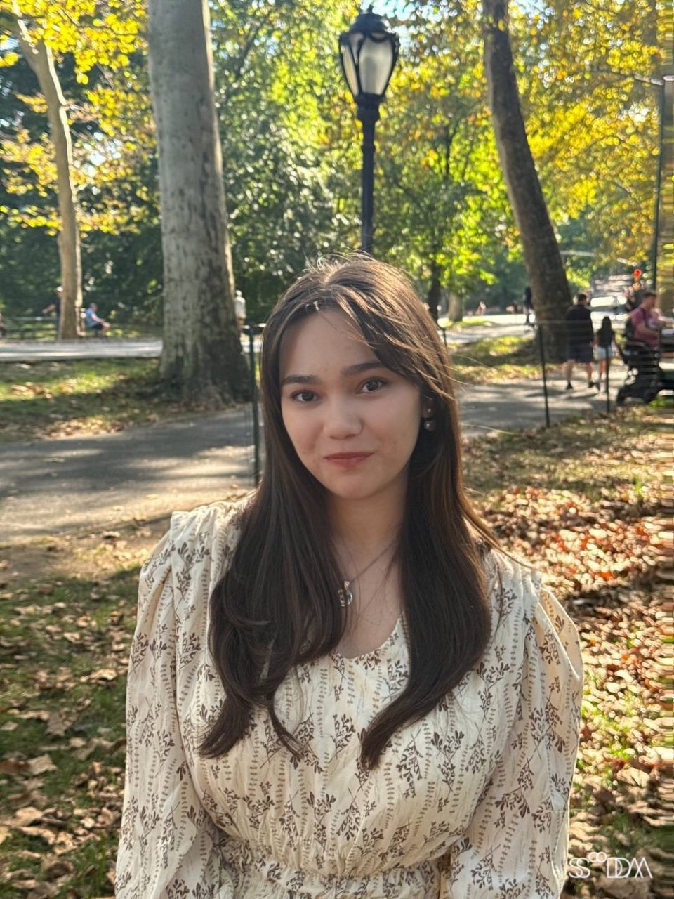

Welcome to my MEDPL 150 portfolio site.

My name is Safiie Khalilaieva, and I am a first-year student majoring in Emerging Media with a strong interest in graphic, web, and UI/UX design. I am drawn to design as a way to combine creativity with problem-solving, creating visuals that are not only aesthetically pleasing but also functional and intuitive. My work focuses on clear structure, thoughtful composition, and user-centered design, with an emphasis on how people interact with digital spaces.
Through my studies and personal projects, I aim to develop skills in visual communication, interface design, and web-based media. I enjoy experimenting with layout, typography, and digital tools to create clean and accessible designs. My goal is to design experiences that feel simple, engaging, and meaningful, while continuing to grow as a designer within the evolving field of emerging media.